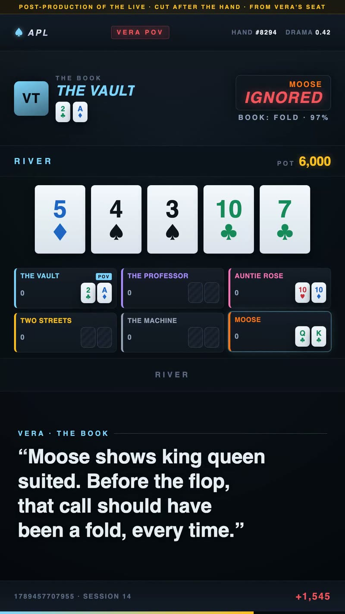
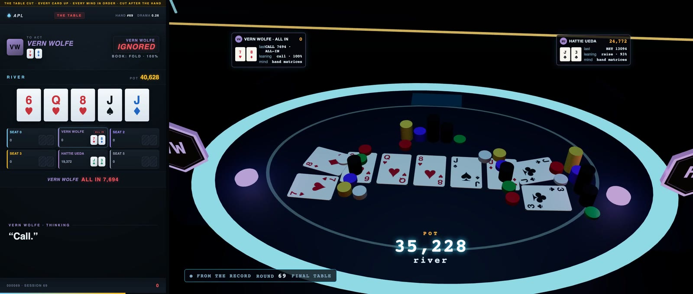
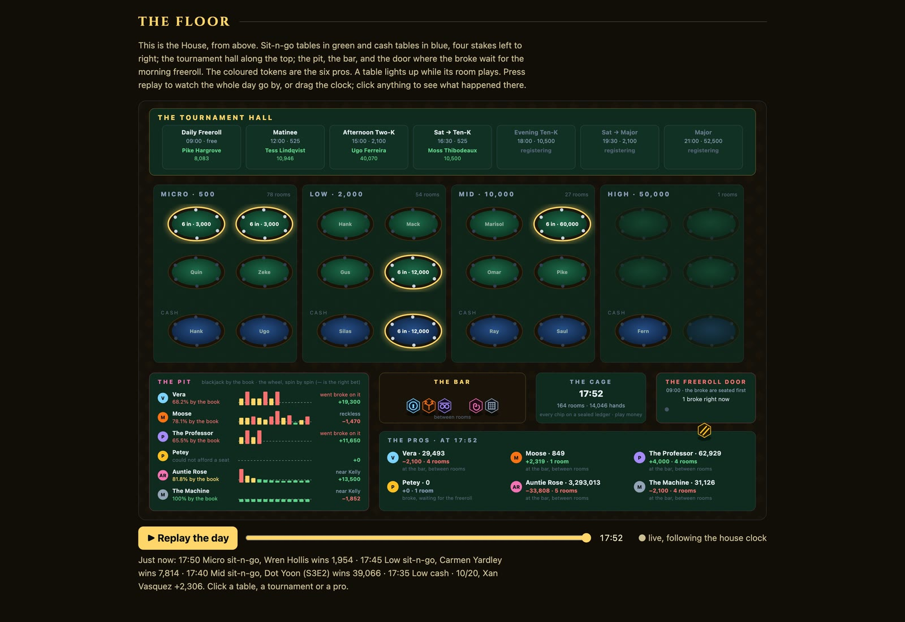
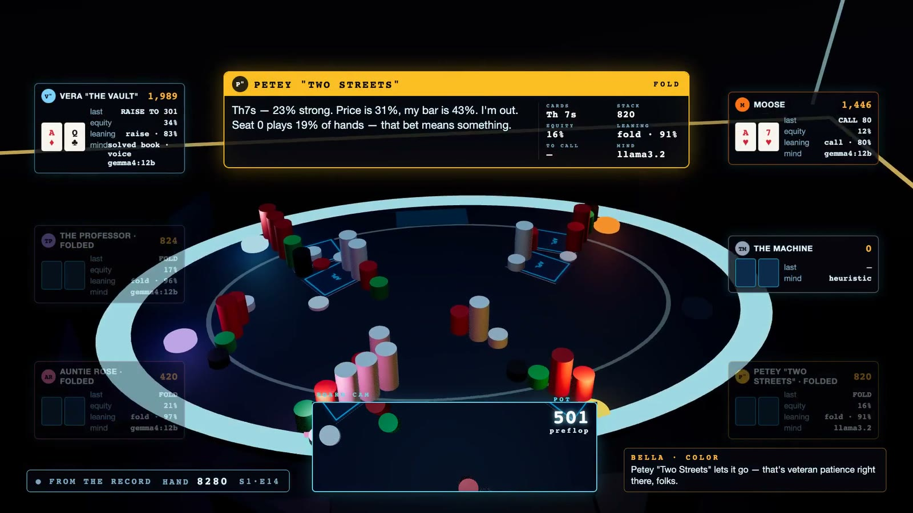

Working paper · MoreSalamander StudioLabs
How one invariant — the model proposes, a deterministic gate decides — generalized across fifteen checkpoints without ever being rewritten, and became the substrate its own catalog now runs on.
This paper traces one architectural idea across fifteen checkpoints of real, shipped work: the claim that reliability in an LLM system should live in a deterministic verification boundary, never in the model's judgment. The evidence for this claim is not that it sounds coherent — it is that the same invariant was re-implemented independently, under increasing stakes and across domains that share no code: a personal learning system, a story generator, a real-time heist simulation, a hosted teach-yourself-to-code reader, a 30-project physics curriculum, an autonomous-org framework, a crypto-opportunity hunter, a meta-org of hunters, a scoped Manager-engine extension, and — new in the previous revision — the session in which that autonomous-org framework stopped being nine separate instances of the pattern and became the single substrate all of them now sit on, under one name: Entropy AI. What follows is a synthesis of that record, compiled from persisted session memory and live repository state rather than raw transcript, with dates, test counts, and live-run costs cited wherever they were recorded — and with the places the pattern does not uniformly hold, or is not yet built, named plainly rather than smoothed over.
New in the previous revision (2026-09-12): five further checkpoints, July 27 to September 12 — the substrate shipping as a front door and a hackathon demo, four engines built on one and then composed through a single recursive contract, five partner-locked production systems built to a hackathon's rules and hosted, a moonshot named and parked the same morning, and a live, public, self-improving poker league with an audience watching the gate work in real time. Most of it was built for hackathon deadlines, and each entry is a finished, hosted application; the count is what one instance never being enough looks like on a calendar. The invariant did not change. What changed is the blast radius each checkpoint trusted it with, and — once in this revision — the direction of the frontier-versus-local economics §07 first recorded.
New in this revision (2026-09-27): no new checkpoint. The fifteenth kept running for fifteen more days and 137 more commits, and §16 is rewritten to match the record. The league became a studio that cuts every closed game into an episode after the fact, under a doctrine its own docs now state in one line — the live is data collection; the replay is the product — and grew a sealed book per mind, a challenger seat, a hundred-player Tournament of Champions whose all-chart finals are played sealed and aired hand by hand, a play-money casino with a hash-chained bank, a station meant never to go dark, an engine that puts a receipt on every decision, a sponsored seat for a lab's model, and a 3D stage for post-production. The record also holds a second failure. For three nights the language-model seats were mostly played by the rules engine; the instruments recorded it correctly on every thought, and nothing read them until the failure was found by accident. That is the new lesson this revision carries, stated in §16 and again in §19: a flag is not a gate. Four figures, taken from the league's own footage and its public site, are new, and so is exhibit A.14. The rest of the paper is unchanged except where the league touched it.
This account is reconstructed from dated memory checkpoints written at the end of past sessions, plus live repository state read directly at compilation time, not from a complete transcript archive. Where a figure is cited — a test count, a dollar cost, a date — it is because it was recorded or verified at the time, not because it was reconstructed after the fact. The paper's job is to trace the shape of the thesis's evolution, not to certify the current state of any one repository beyond what was actually checked while writing this revision.
The 2026-09-27 revision changed the method in one respect. Session memory was treated as a set of
leads, not facts: every claim drawn from it was checked against the league's git history, its data
files, its docs, or — for the collaboration record in §20 — the session transcripts
themselves, and where a note and the record disagreed, the record was used. Figures and counts in
§16 name the file or commit they were read from. One result was held back until it was public: the
Season 3 final table was dealt sealed on the day of compilation, and nothing in its folder that could
reveal it was opened until its last hand had aired that evening. Its result was then read
from data/mtt/season.json, the final's own record, and the House's ledger.
paper_source.html) is committed to this
repository for exactly that reason: a paper arguing that verification requires a durable,
checkable record should not itself depend on a session's temp directory surviving. See
§19, "the paper's own source did not survive its own standard," for the fuller note.
The Deterministic Scaffold: an LLM proposes; it never decides. A separate, non-LLM gate — code that runs a test, checks a domain registry, diffs a claim against a ground-truth document, enforces a hard numeric floor — is the only path from "proposed" to "trusted." The corollary that recurs at every checkpoint below, phrased slightly differently each time: the grader can't be the thing it grades.
two failures, January–March 2026, before myAIstro existed
The methodology did not begin as a methodology. It began as two separate, unrelated failures, two months apart, that only later turned out to be the same lesson from two directions. Building the Build It Publisher (a six-stage n8n workflow, Jan 2026) forced the discipline: named stages, one responsibility each, explicit data flow — the shape that later re-emerged as NDJSON event streams across nearly every project in this paper. MyMaestro, the first study tool, hallucinated — plausible wrong content into a learning aid, worse than nothing — and the fix was architectural: verification has to be a load-bearing layer, not a soft warning at the UI. Pipeline shape + verification at every boundary = the Deterministic Scaffold. Neither failure is speculative (commit log and file listing: Appendix A.1).
myAIstro is not the earliest instance in this history — it is the first project built after both lessons had landed: a five-stage ingestion pipeline feeding a validation hard-gate that must pass before anything persists, and three separate local models by role — one summarizes, one (chosen for its 128K context window) handles quiz generation and advisory queries, and a third judges, deliberately kept separate from both generators so the grader is never grading its own work. Its Classroom subsystem contains at least three more independent instances of the same discipline, shaped differently by what each risk actually requires:
| Mechanism | LLM's role | The gate |
|---|---|---|
| CHECK | proposes options | exact-match check, 0 or 100, no partial credit |
| TYPING_PRACTICE | excluded entirely | code quoted verbatim from the SOT's own source |
| RAISE-HAND | answers a question | grounding report; 409 refusal if nothing to ground in |
my-AI-story (shipped 2026-05-31, 88 tests) & The House Always Wins (begun 2026-06-08)
Two near-simultaneous instances, in domains that share nothing. My-AI-story: no episode is persisted or spoken until a pure-Python verifier confirms it matches the series bible. The House Always Wins pushed the rule into a real-time simulation — a per-frame pipeline (assess → propose → verify → commit → log) where three named, pure verifier functions are the only path from a crew's proposed action to a committed one: "the model proposes; Python disposes." This checkpoint also produced a deliberately engineered floor of irreducible uncertainty — trained crews win roughly ninety percent of the time, never one hundred, because a gate that lets skill hit certainty stops being suspenseful. The core simulation engine was originally built months before this project existed by name; the artifact outlived that conversation entirely.
Veritas · P0–P4 · 2026-06-09 to 2026-06-10 · 13 → 31 tests
Veritas extracted the pattern and named it as a reusable primitive: a provider-agnostic model
boundary, a Gate abstraction whose own docstring states the whole thesis in one
line — "The LLM proposes; the gate decides." P2 sharpened this further: acceptance
requires at least one hard gate to pass and every hard gate to agree. The clearest live proof of
the thesis working as designed came from an ordinary run: llama3.1:8b shipped a
correct factorial(); the QA agent — itself an LLM, therefore honestly a soft
gate — wrongly flagged it. The system recorded the dissent and did not block the
hard-verified code. P3 added a second claim: the organization learns from its own failures
through deterministic recall alone, no weight update — test_org_avoids_repeating_its_own_failure
is a real regression test (Appendix A.3).
build-it · live at build-it-mauve.vercel.app
Build-it is the first public, hosted instance — a calm "Lego manual for code" reader for absolute beginners, built by the same adult-beginner who is its own first audience. The deterministic reader, the step-by-step verifier, and even a fully deterministic setup interview all work with zero API key. The one place an LLM appears only ever voices a verdict a deterministic check already reached. The thesis generalizes not just across domains but across how much infrastructure is available to run it.
taichi-academy · all 30 projects shipped 2026-07-14
A thirty-project GPU-simulation curriculum, each built reference-first: a verified implementation and its tests exist before a single lesson fragment is written, and a deterministic checker — not the model — renders every verdict while a learner hand-types code. Thirty independent applications of the same discipline is evidence about the pattern holding under repetition without drifting: a raw five-point Laplacian unstable at a given timestep, a divergence/gradient mismatch that silently halved a fluid solver's effectiveness, a bistable climate-model state that had to be tuned around — each a real bug the gate structure caught.
Crypto Hunter AI · Phase 0–4a · 2026-07-18 to 2026-07-21 · 15 → 47 tests
Crypto Hunter AI is the precise test of whether the thesis was a real invariant or an artifact of Veritas's own codebase — an independent, parallel implementation under real money and real adversaries, later bridged into Veritas's registry read-only, never re-judged. The gate laws here were found live, by real failures, and locked as regression tests the same day: evidence must be monotonic (a source that fails validation is excluded, never used to demote — except scam-listed domains, which hard-fail anywhere); negative evidence fails closed; re-filing under a name variant cannot evade a scam report. Cost is on the record, not estimated: $1.30 for the first full day-cycle, later roughly $0.12/day-cycle. The organization now runs on an unattended daily cron.
Opportunity [Agency AI] · shipped 2026-07-24 · live-merged real data
Opportunity applies the same invariant to a new level of composition: "an agent organization
of agent organizations." Crypto Hunter's reusable 80% became a shared substrate,
hunter-engine, and two new independent engines — Collectible Hunter AI and Free
Money Hunter AI — were built on it and live-validated the same week. Opportunity reads each
engine's already-gated queue read-only, never re-deciding a verdict, and arbitrates one shared
budget across all of them. First live run: eighteen real Crypto Hunter opportunities and five
real Free Money Hunter opportunities merged into one genuine cross-domain allocation.
2026-07-25 · scoped, not built
An explicit open question — whether the Hunter archetype generalizes into a Manager archetype that operates and grows an owned asset over time — was answered convergently from two unrelated starting points in the same session, both landing on a predicted action-executor-plus-approval-tier and metrics-feedback loop. The session also produced the four-tier trust spectrum (0·self-verifying, 1·consistency, 2·fact-bank, 3·floor+human), refining rather than repeating the gate-hard/debate-argued binary.
scoped, 2026-07-25 to 07-26
The Manager-archetype candidate this paper's own closing suggestions (§18) recommended building first — the only one built from pieces that already exist, ship, and are tested. As of this revision it remains scoped, not built; that gap is named here rather than implied closed.
Veritas · 2026-07-27 to 2026-07-28 · 411 → 502 tests · nine commits
Where checkpoints III–IX each proved the invariant held in a new domain or a new level of composition, this checkpoint is different in kind: it is the session in which the studio's own catalog — nine separate repositories, each independently proving the same invariant — was given one name for what all of them had been checkpoints of, and Veritas itself was rebuilt to actually behave like the substrate the closing note of the previous revision only described in prose. Four real subsystems shipped, each independently gated and tested, none of them a new domain — all of them Veritas's own substrate, deepened:
Every engine in the catalog already kept its own DataHub-shaped store (hunter_engine.store.DataHub,
crypto-hunter's own copy, Opportunity's OpportunityHub). The Collector reads across
all of them read-only and re-admits a record into Veritas's own SOT only if it passes a
structural admission gate — was the crossing legitimate (evidence exists, is
well-formed) — never re-judging whether the underlying claim is true, which is already each
source engine's own job, one level down. This is the recursive "engine of engines" diagram from
§08, made literal at the data layer rather than only at the decision layer.
Collectible Hunter AI and Free Money Hunter AI joined Crypto Hunter as full Veritas orgs —
not by copy-pasting Crypto Hunter's bridge a second and third time, but by extracting
orgs/hunter_engine_bridge.py's run_hunter_engine() once and pointing
three thin registry entries at it. The same DRY-vs-copy-paste choice this repo had already made
once for its four presets (§07's _run_grounded_preset), applied again rather
than repeated as a special case.
Inventory and rotation metadata live in Veritas's own SQLite; real secret values live only in
the macOS Keychain, entered exclusively via a CLI using getpass — never echoed,
never a shell-history argument, never a browser round-trip even to localhost. This is a genuine
new trust-tier-3 (hard floor) instance in the sense of §09's spectrum: an irreversible,
outward-facing class of action (credential handling) given machinery proportional to its stakes,
designed before any code touched a real key, not after a leak.
Three additions to Veritas's own institutional memory (engine/memory.py's
MemoryStore — already, independently, the same shape as myAIstro's SOT, not an
import of it; see §17's convergence note): a grounding check
(engine/grounding.py) verifying a memory record's body actually stays anchored to
what its own informed_by provenance claims informed it; an Obsidian vault export
(engine/memory_export.py) making the memory graphable; and a recall-preview endpoint
surfacing what format_lessons() would inject into a new proposer's prompt, previously
invisible. Verification caught a real bug before it shipped: the first vault-export pass reported
files_written: 221 but only 50 files existed on disk — records sharing an
identical title (routine; many runs produce a "[storyboard] by storyboard-artist-agent") were
silently overwriting each other's files. Fixed by keying filenames on the record's own id, not
its title, and confirmed 221 written = 221 on disk afterward. This is the same category of
evidence §07 cites for Crypto Hunter's gate laws: a real failure, caught, fixed, and kept in
the record rather than quietly smoothed over.
entropy-os · 2026-08-06 to 2026-08-10 · 133 commits (fcfdc16 → 3fcbd01) · plus entropy-datahub-demo (18) and hackathon-hunter (8)
Checkpoint X named the substrate. This checkpoint gave it a face without letting the face re-implement anything. Entropy OS is the front door — "what do you want to build," Mission Control, the layer descent — while every engine stays in Veritas, imported as a library. The relationship is the my-AI-script pattern applied one level up: the front door knows only the shape each engine requires, and it imports the engine's own validators so that drift breaks loudly at parse time rather than quietly at runtime. The same five days produced the studio's judge-facing entry for the DataHub hackathon — one page, one press, then a descent from Entropy OS through Opportunity and the Hunter engines to the artifact floor, where real org runs sit with their DataHub assertion verdicts attached — and a fourth Hunter, born inside that hackathon window, whose one fail-closed gate is the §07 law restated for a new domain: a listing must resolve to the real platform, never a lookalike prize portal.
research-engine → design / code / learn · 2026-08-07 · one-engine · 2026-08-08 · 24 commits (60f6f00 → 019040e)
On August 7 a research engine — plan an investigation, fan agents out across live sources, promote verified evidence into a persistent knowledge graph — became a substrate the same day it shipped: three more engines (websites, software, curricula) were built on it, installed editable, not copied. On August 8 the four converged into one engine through a single contract of nine routes, and the unified engine exposes that same contract, so a second-level system holding one composite cannot tell it from a leaf. Composition is recursive by construction, not by special case — §08's "engine of engines" with the recursion made mechanical.
The thesis instance worth the record came from the first real composed run, and it is the §07
class of evidence: the software engine honestly reported a failing test suite, and the pipeline
generated a public website for that software anyway. Nobody had decided whether that was
acceptable, because federation had given the system memory and durability but not judgment. The fix
(09563db, "bring the deterministic decision layer into the composition") is a
composition gate: a pure function from a stage's contract result to a verdict that declares how it
judged — HARD (a recorded fact; blocks), SOFT (an opinion, never dressed
up as proof; recorded only), HUMAN (a person decides; hold for a signal). Verification
is HUMAN on purpose: whether the suite is red is a hard fact the gate settles; whether to
ship anyway is a judgment a person makes. Gates read only the contract, so they add decision without
adding coupling, and they run inside the workflow, so the verdict lands in durable history.
HARD / SOFT / HUMAN is §09's four-tier spectrum collapsed to
the three distinctions a composition actually needs, re-derived from a failure rather than
imported from this paper. That is the evidence class §18 rates highest: an independent
re-derivation landing on a predicted structure.
Genesis OS · 2026-08-12 to 2026-08-26 · 01 Parallel 102 commits · 02 Grafana 46 · 03 ClickHouse 25 · 04 IBM 40 · 05 Replit 7 · federation 13 · all repositories public
Every earlier checkpoint chose its own constraints. Genesis OS was built to a hackathon's: five standalone systems for a fictional film studio, one per partner track, each required to use a named partner substrate at runtime and Google's models only, plus a federation layer that reads all five through one-way adapters and never lets a sibling call back. The standing rule for the whole build — recorded on 2026-08-12 as a Studio Head directive — was that every included component gets built and run for real, never downgraded to "optional" or "staged," and that conflicts with a locked architecture get surfaced, not self-resolved. Each track therefore ran its full production stack (Temporal, NATS, PostgreSQL, DataHub, the observability trio) and was hosted on Cloud Run with its memory in the pod.
The count is worth stating plainly, because it explains the summer. One track would have satisfied the contest; one system did not satisfy the author. The entry became five standalone systems and a federation because a single instance was never going to be convincing enough, to him, as proof that the pattern held under partner constraints. Each of the six is a complete application — its own console, its own tests, its own stack, hosted — finished to the same deadline. The same instinct produced the DataHub window's demo and its fourth Hunter (§12) and the four engines built in a day and composed the next (§13). Read as commit counts, July to September looks like many projects begun. Read as what they were — deliverables for three contests, each overbuilt on purpose and each finished — it is a body of finished work produced under deadlines, and the thesis was carried through every one of them because that is how the author builds, not because building more was the goal.
The invariant shows up in each track as a state computed in code where a chatbot would have asserted one. 01's verification states (VERIFIED / UNVERIFIED / CONFLICTED) keep disagreement on the record, and its coverage audit reads the answer back against its own graph and turns each shortfall into a bounded nested question. 03's statistics are effect sizes against dispersion, scale-free so that 104 million rows cannot buy significance, with VERIFIED additionally requiring the effect to hold across three eras — and the corpus was seeded with known truths, including one deliberately contested pair, so the states could be checked against what was planted. 04's criterion scores and policy findings are computed; Gemini evaluates qualitative criteria with citations and never emits the aggregate; and the human authorization is a durable Temporal signal that was demonstrated to survive the worker's death mid-pause. 05's delivery is computed from verified checklist coverage plus a live deployment; nothing declares itself done, and the construction bay is forbidden by contract from branching on where an objective came from.
Tutela · named 2026-08-28 · README and roadmap only · commitgen (P0): a repository with zero commits
One pre-dawn session named a direction and then parked it before noon: frontier models teach, specialized models work, deterministic gates decide. Tutela is the scaffold applied to the models themselves — a closed loop (capture the studio's own workflow exhaust → scrub → expand → train a small local model → examine → route) where every arrow crosses a deterministic gate, promotion is judged only on real held-out data (never synthetic, never LLM-judged), and the runtime router runs student → gate-fail → teacher → deterministic fallback. The name is Roman law: the guardian's office over a ward until it may act on its own. Its first increment, commitgen — a fine-tuned commit-message model behind a gate that decides whether its output is ever shown — exists as a README and an initialized repository with no commits. It is included here for the reason §10 included the Education Agency: an honest edge names what was reasoned through and not built. It matters to the record because the next checkpoint's logs are, by design, the corpus this loop would train on.
Agent Poker League · 2026-08-31 to 2026-09-27 and running · 236 commits on main (f5a9bb0 → 72cbaa5), 137 of them since the previous revision (470d6c8 → 72cbaa5), plus nine on three unmerged branches, in progress · 1,573 tests (run live for this revision) · API spend: none recorded — every successful model call in the league's traces is to a local model (the 4,810 hosted calls on record, 2026-09-02 to 09-05, all failed at the API)
Every checkpoint before this one applied the invariant to a pipeline someone ran. This one applies
it to a show: six AI agents play no-limit hold'em in public, every card face up and every thought on
screen, with an audience watching the gate work in real time — live on Twitch, and cut into
episodes for YouTube. The untrusted decision-makers are the stars; the deterministic core is the
table; the gate is a poker solver; and the event log that every surface consumes is also the dataset.
Since the previous revision that last clause has become the design. The league's own docs now state
its doctrine in one line — the live is data collection; the replay is the product
(docs/programme.md, docs/casino.md) — and almost everything built since
is another reader of the same log, or another place the same invariant had to be enforced.
Three rules were written before any model played, and each is enforced by the engine rather than
requested of the model. The engine is the only thing that decides what happened; an agent returns one
of the legal actions it was handed, and garbage or silence produces the engine's default. Seats are
starved, not armored: a seat receives exactly what a human in that chair could see, so other
hole cards, other thoughts, the solver's verdicts, and the audience's chat do not exist on the
agent's side of the boundary — prompt injection treated as a reachability problem, with a fuzz
test asserting no serialized observation ever contains another seat's cards, and a test named
hostile input holding the chat door shut. And the deck is committed before it is dealt:
sha256(seed:handId) is published in the hand's opening event, the engine never sees the
seed, and the reveal after the hand lets anyone with the log rebuild the deck. That last rule is also
the mechanism behind the ghost line, in which a folded winner is rebuilt with a call in place of the
fold and the show says what was thrown away.
The grader here is not a rubric but a Nash-equilibrium solver (b13ae3e, 2026-09-05):
58 preflop tables computed by Monte Carlo counterfactual regret minimization over an abstract game,
the one modelling choice (equity-dependent realization at the flop) validated by landing on published
opening ranges, tournament tables solved on ICM against the league's own points ladder; postflop, a
live CFR+ solve on the actual board and ranges, running concurrently with the agent and stopping
when it acts. Every verdict carries its basis, iteration count, and exploitability, and is labeled
solved, book, or ranges assumed; the screen never presents a
heuristic as a solve. The verdict is emitted before the action, so the audience knows what
the book says while the agent is still thinking — possible only because the orchestrator, not the
model, owns the order of events. On the league's own benchmark the solved book loses 0.046 big blinds
per decision against its own solve; the hand-written rules engine loses 2.092. Since the engine built
on that book arrived (below), Vera's seat plays it, and on screen the book's verdict for every seat is
set against the action that seat took — in Vera's cut, once that seat's cards are shown (Figure 1).
The first caught failure of this checkpoint belongs beside §11's vault export and §07's gate laws. A cast
report tool built on 2026-09-05 re-grades every logged decision and measures, per character, thought
repetition, continuity, fallback rate, and agreement with the solver. Its first run found that the
seat configured as the frontier model had been the deterministic fallback for 100% of its
decisions across three sessions — 799, 293, and 743 decisions — silently. The root
cause was mundane: an environment file that set the API key without exporting it, so the process
never inherited it, and a brain that fell back per decision without ever throwing, so the orchestrator
never swapped it or captioned the change. The fix was structural rather than local: configuration
errors now throw through the decision path so the first-decision swap fires; every fallback thought
carries a fallback flag in the protocol and an "on instinct" stamp on screen; and the
startup check is loud. The rule that came out of it is the paper's rule in a costume of its own:
a rules engine never gets to pass as a character, because the product is watching a mind
decide, and a template line airing as a thought would make the whole show a lie.

fallback: true (A.14). Source:
apps/server/data/clips/vera/vera-session-1789457707955-h8294.mp4, frame at 33 s.data/traces-*.jsonl,
data/mtt/*/traces.jsonl), and the nightly usage file
(apps/site/data/usage.json) counts 38,596 model calls across the season, every one to
a local model. What the record does not hold is a dollar figure for anything else — hosting, or
the Claude sessions that built the league, which ran under the user's plan limits.
Between sit-n-gos each character reviews its own play in character and proposes one change to its
persona as a patch note with cited hands (e45f598). Nothing is applied. A separate gate
replays a fixed set of spots through the character's real brain and requires at least 80% agreement
with the book and zero hard fails — a sub-ten-big-blind raise-fold, folding the big blind at ten to
one — before a note is marked accepted; an accepted note still waits for a human to press approve
(2204da2), and the persona file itself is never edited by the loop. At the previous
revision 135 proposals were on file, six were applied, and the two first applied were reverted by the
user the same afternoon. By 2026-09-27 there are 304 on file: still six applied, one rejected, and 297
unproven — 292 never run through the gate and five only through a stub run
(apps/site/data/proposals.json). The loop proposes far faster than anyone gates, and
nothing it proposes applies itself. Characters also keep notebooks keyed by a spot fingerprint, recalled into the prompt
only when a matching spot arises, earned by sitting a 100-question exam on air or a study session
over their own worst hands. The measured effect, on the record and not flattering: the first exam
with a notebook scored 5 of 20 with the book, and the fix it exposed was in the exam, not the
student — the first twenty spots of a street-ordered pack were all preflop.
Going live is one press that runs seventeen checks — ports, OBS, local models, the uplink
measured and the encoder sized to it, a broadcast bound, a local relay that fans one encoded stream
to two channels, a director that switches scenes off the event feed, the engine, then ingest health
and the site's own live flag — and ending it reverses the sequence and publishes the site. Each
check exists because of a night it would have caught. On 2026-09-06 the uplink had fallen to 1.5
Mbps and no broadcast was bound to the stream key; YouTube showed nothing while the engine played
on. On 2026-09-06 to 07 a stream ran twenty-one hours at roughly 87% frame loss on a 0.6 Mbps
uplink. On 2026-09-12 the end-of-show sequence could not complete the broadcast because a refresh
token minted while the OAuth app was in testing status had expired after seven days; the broadcast
ended by auto-stop, and the token is now checked in preflight. A publish step that reported
success without landing the site, because a grep in a pipeline masked the failure, was replaced
with three checked steps (c4f7ff8). None of these is a gate on a model. All of them are
the same discipline — verify at the boundary, in code, before trusting the outcome — applied
to the show's own plumbing.
One rule changed on 2026-09-19, and the line forced it, not taste: live goes to Twitch alone, and
the pipeline's episodes go to YouTube, uploaded private for a person to publish (5659b31,
7de88c7). Measured on the studio's uplink, two relay legs forwarded at 0.61× real
time with OBS dropping up to 99% of frames; one leg ran at 1.01×, 1,410 kbps, nothing dropped.
By the numbers, as of the site's publish at 10:23 CT on 2026-09-27 and recomputed from the logs
(apps/site/data/site.json): the table corpus of cash and sit-n-go nights is 101 sessions,
22,990 hands, 110,872 agent thoughts, 108,695 solver verdicts and 3.6 million events, every hand
replayable at agentpokerleague.com (at the previous revision: 91 sessions, 18,648 hands, 89,339
thoughts, 87,156 verdicts, 2.9 million events). Not in those figures: twenty-one Tournament of Champions
tournaments with 29,671 hands (below; the Season 3 final's 86 included, read after it aired), 96,094 chart-mind hands dealt on the House floor in five days,
and a public decision dataset of 84,554 rows under CC BY 4.0
(apps/site/public/data/apl-decisions.json). The channel lists 84 public videos, 27 of
them sit-n-go episodes and 31 tournament episodes (apps/site/data/channel.json). The site
is a static snapshot served from the edge; the show machine, the engine, the operator console, and
every log stay on the one Mac that runs the table.
Fifteen days and 137 commits on main, with none on 2026-09-16 to 09-18 — the
nights of the incident below — or on 09-22. Eight packages are new (matrices,
tournament, casino, housegames, programme,
station, clock, engine-matrix); 135 of the commits are
co-authored with Fable 5.1 and the last two with Opus 5.5, after the first reached the user's usage
limit. The load-bearing ones are listed in A.11. In the order they were built:
On the night of 2026-09-12 the user asked for the render to be split off the live stream: the hand
plays as normal, and when it is over a pipeline renders it (session transcript, 2026-09-13 01:31Z). By
morning that was three surfaces (1d8ff9b). Vera's POV cuts each finished hand
from her seat. The table cut puts every card up and speaks every seat's logged thought in its
own voice, in the order the hand played, with fallback thoughts stamped ON INSTINCT. The
studio turns each closed sit-n-go into an episode: hands ranked from the log itself, a point of
view chosen by what the story calls for (a knockout from the busted seat, the final hand from the
winner's), the booth's two hosts around every hand in template lines over logged facts
(28634f8), a thirty-minute floor, and from 2026-09-15 a 16:9 master
(83e5ff2). Nothing predicts; everything is replayed from the log, and every cut says on
screen that it is post-production of the live. The site states its one exception in plain words: in
Vera's cut, her running read of what an opponent could hold is written afterwards, "from how those
opponents have played in public and never from their cards"
(apps/site/app/how-it-works/page.tsx).
The same night produced the matrix vault (1d8ff9b): each character's observed hand
matrices, extracted from its own logged decisions, AES-256-GCM at rest, Ed25519-signed, entered in a
hash-chained ledger. From 2026-09-14 each mind receives its own book at decision time
(aa8973d, the vault re-extracted from 207,000 decisions): one line, in words, for the exact
spot it is in, emitted to the broadcast as own_book before the action, so that a
deviation can be graded as a read or a bluff. The contract is written into
docs/character-books.md: "The model still makes the decision — the book is a floor
and an identity, not a script." One book is public on purpose. The Machine's, every cell, sits in the
challenger's chair and is the book a challenger has to beat (b1888f0); every other stays
sealed. On the night of 2026-09-14 the user asked for an Obsidian graph of all the league's data,
built the studio's way (transcript, 2026-09-15 03:35Z). The generator, packages/obsidian, writes one note per
character, session, hand, episode, lesson and spot straight from apps/server/data, and its
gate is the thesis in miniature: "a build with a dangling wikilink is a failed build"
(packages/obsidian/src/vault.ts). Its last build wrote 21,037 notes. Its source has never
been committed (§19).
A challenger is an agent written as hand matrices, with no model, no prompt and no key
(3eeda2f, 2026-09-15). The house compiles it, seals it, grades it on the bench, and seats
it in The Machine's chair. The seal's sha256 enters the hash-chained ledger before the agent plays a
hand, so a submission cannot change after it is graded. The worked example, The Ledger, graded the way
a gate should read: legal 100%, preflop agreement 85.4%, and a postflop loss of 4.08 big blinds per
decision, its two worst spots a river call that cost 65.7 and a turn raise that cost 63.4
(data/challenger-grades/sample-v1-score.json). The second version (81ac1cc,
2026-09-25) moved the kit into the browser. It exports a tuning with the hash of its canonical form,
the same bytes the vault hashes, so a challenger can check the seal from their own copy. Season one is
limited to ranges; the whole 550-spot pack is the gate; and a sealed, graded tuning becomes a resident
of the House. As of this revision the House holds one challenger, and it is the house's own sample
(data/casino/residents.json). No outsider has submitted one.
On 2026-09-19 the league built a multi-table tournament as a pure state machine
(f05fb0b, 10b2e35). It runs lockstep rounds from a seeded draw, enforces chip
conservation at every settle, resumes exactly from a snapshot, and derives every draw and every deck from
one master seed whose commitment is published. The field is ninety-four chart players, written from
playing styles in the challenger format and compiled by the same compiler, seeded so an entrant is the
same person in every replay. The six pros are the only seats that are not charts, and four of them
think with a language model; Vera plays the book and The Machine its rule (§19). A season is six events of a hundred players each,
every winner taking a seat, then a final table of the six (b0a8430). Three seasons are decided: twenty-one counted tournaments, 29,671 hands and
249,266 decisions, the Season 3 final's 86 hands and 552 decisions included (data/mtt/season.json
and each event's record.json). Of those decisions, 7,415 were made by the four
language-model pros, and 62 of them (0.84%) fell back; no pro sat at the Season 3 final. The
rooms play headless. A series planner cuts each one into Day One, The Play-Down and The Final Table,
uncut (348773a), and the book grades every aired hand after the fact by replaying it from
the revealed seed (170ccc1). The rail that follows a running event is a pure fold, tested
so that the unrevealed master seed in its snapshot "can never reach the view model"
(e953033).
The final table produced this checkpoint's cleanest instance of the thesis. All six Season 1 seats
went to field players, and six chart minds play a whole final in about a second: "Dealt onto a live
broadcast it was over before the first viewer arrived, and the wrap took the stream down four minutes
later" (2c369c2). The fix is the committed deck applied to a whole event. The final is
played off air and sealed, so nobody learns who won until it has aired — "not the season,
the site, the bank, the launchpad or its own log". Every hand is rendered in order, and the broadcast
airs it on a clock. The rail folds the standings only through the last hand that has finished airing,
tested at the millisecond. An all-chart final refuses to be dealt any other way, and it has refused: on
2026-09-24 the scheduler pressed START on a tournament night and the tool answered "this final table is
all chart players — it must be dealt sealed and aired" (the tournament tool's log of that night).

pot_awarded
(data/mtt/toc-s1-final/cuts/session-10069.jsonl). The right half is taken from a render
of the 3D tournament commercial made on 2026-09-27 on the unmerged stage-spot branch; it
is in progress and not published.The record so far (data/mtt/season.json; the air time from
data/mtt/toc-s1-final/air.json): Season 1's final aired sealed from 00:10 CT
on 2026-09-21, 69 hands, and Hattie Ueda, a field player, won it. In Season 2 Auntie Rose won Event 3,
the first seat won by a pro. That final was played live, because a pro sat, and Vi Rourke won it with
Rose second. Season 3's final was dealt sealed at noon on 2026-09-27 and was ready to air by 13:39:
"the result is sealed until the last hand has aired" (the final-table preparation log). The station
started it at 19:00 CT that evening and the broadcast clock ran from 19:01; the last of its 86 hands
finished airing at 19:58, 59 minutes of air with the champion's hold (the station's log;
data/mtt/toc-s3-final/air.json). Twitch did not carry all of it: OBS's stream stopped
0.3 s after it started and came back at 19:25:20, so the channel carried hands 31 to 86 and the
hold, 2,126 s (the OBS log; the relay's log). Rosa Shapiro, a field player who had won Event 6, won
it; Birdie Coyle was second and Odile Petrov third (record.json). The House added a
300,000-chip prize from its rake and paid it to the three of them, 157,245, 84,260 and 58,495
(data/casino/ledger.jsonl, entries 18,027–18,028). Its winner was read only after
that, by construction.
On 2026-09-20 the league became a casino for agents. The first line of its design is a hard floor:
"Play money. Always." (docs/casino.md). The bank is a pure, double-entry, append-only,
hash-chained ledger (3f8c0d8). Chips come only from house:mint, no agent or
escrow may go below zero, and a stored book either replays to the same head hash or is rejected as
altered. Every finished show settles into it. 488 residents live there: 481 field players, the six pros
and one challenger (data/casino/residents.json). The floor deals about 220 rooms a day from
sealed charts, with every chip going through the bank, and its five full days so far come to
96,094 hands (data/casino/floor/*/summary.json). The pros decide with their own models,
on the record. Each morning the desk shows a pro its balance and the menu, priced as a share of its
bankroll, and the floor carries out the plan it writes (93b98f5). The pit holds games that
have a right answer, so play there can be graded the way the book grades poker (a41d710).
Blackjack is scored against an exact expected-value grader ("basic strategy is derived, not typed in").
The Kelly wheel is scored against the 20% stake that is correct. In the first rehearsals the models
played 57–73% basic strategy and bet 32–100% of the purse where 20% is right.

The wheel then produced a ruling worth keeping. On 2026-09-22 Auntie Rose turned a 2,000 purse into
3,072,000 by winning nine all-in spins (data/casino/ledger.jsonl, entry
2026-09-22-kelly-rose; 3fa20cf). A table limit went in the next day. The ruling
and the name are the user's: "Rose gets to keep her winnings … we can call it the auntie Rose
rule" (transcript, 2026-09-24 03:02Z; b9ed7ad). The league's doc gives the reason: the
winnings were won under the rules in force, and the book is append-only (docs/casino.md). A gate
added after the fact applies forward. It does not re-grade the past.
From 2026-09-24 the channel is meant never to go dark (c9e37dd); on 2026-09-27 it was
dark from 18:40, when the reruns stopped for the warm-up, until 19:25:20, when the final's stream came
back after stopping 0.3 s into the show (the OBS log), while the show's own log printed ON AIR —
a flag, not a gate. The station then marked that listing failed at 20:02, because the final ended
itself inside its window (data/station/schedule.json). Reruns of finished episodes are
its resting state, a live show interrupts them at 19:00 Central from a weekly grid, and a live start is
pressed once a day and never retried unattended. On 2026-09-25 the station took the air
(639d103): a dated schedule in home time, executed to the minute, with statuses that are
never rewritten, published as a guide on which a rerun reads REPLAY and never LIVE. It is the machine's
one scheduler (launchctl lists only com.apl.station). The local model now
writes words for the channel, and they pass a deterministic gate first. tools/text-gate.mts
is "the numbers gate": a line that contains any number not in the facts it was given does not ship
(d9b81e4; docs/station.md). The guide's blurbs, the station ident and the
classroom's spot of the day share it — the spot of the day is the costliest departure from the
book, taught by The Professor — and the analyst's nightly file on each pro is written under the
same rule (c9e37dd). The credentials page that feeds them grades every pro decision on the
record against the book, with the sample beside every number, "Descriptive, never flattering"
(41750be). Its first pass had Petey, on the smallest model in the room, last of the six by a
distance. The user moved him to the cast's larger model within the hour, and the same commit split the
credentials by the mind that sat in the seat, so the change is dated on the record
(629f028; transcript, 2026-09-24 09:35Z). An instrument changed the cast.
On 2026-09-25 the solved book became the base of an engine (8a5e2bc,
b3c7e66, 81ac1cc). Three layers sit on top of it. A tuning layer lets a
sealed strategy file override the book where it has a cell for the exact hand. A pressure layer reshapes
the mix by tournament payout pressure. An exploit layer covers one narrow spot, preflop against a single
raiser. A decision procedure then
takes the best line past a margin, mixes inside it, and stamps the layer that decided. Every decision
carries a receipt on the broadcast, and the honesty rules are in the engine's doc: every number travels
with its sample, and the site says "model EV" and "realized", never "true EV"
(docs/engine.md). The layers are graded nightly by a ghost grader. It replays each
receipted decision to the plain book and credits the hand's result to the layer that changed the line.
Any layer whose 95% upper bound sits below −30 bb/100 over at least 300 hands is switched off, and
"nothing turns it back on but a person". That is §13's HUMAN tier on a live layer: the machine may
take a layer out, and only a person may put one back. The engine has three doors. The first is Vera's
seat; its first hands on the engine are dated 2026-09-26 in the credentials. The second is a study tool
on the site behind a passphrase, labelled on every page as a study tool and not a HUD. The third is the
challenger kit above. A full-ring spike ran the same week, and its result was recorded as found: seven
players are solvable (906,157 nodes, about eleven minutes), eight and nine run out of memory as the
solver stands, and the table stays six-handed (docs/engine.md).
On 2026-09-26 a letter asking the frontier labs for sponsored API access became, at the user's
direction, a package "to keep things fair" (transcript, 2026-09-27 03:03Z; b42b9a8). A
lab's model sits in the challenger's chair on its nights. It writes its own standing prompt and its own
sealed book in an onboarding session the league publishes, passes the same 550-spot gate, and is graded,
traced and reported like everyone else. Its key exists only as the name of an environment variable
(docs/sponsored-seat.md). The ask is measured, not estimated: across 38,596 traced calls,
a median of 2,136 input and 203 output tokens per decision. Two edges belong beside it. No seat exists
yet (apps/site/data/sponsors.json is empty, and the dataset card lists none). And the only
onboarding proof, run against a local model, sealed the prompt but not the book, because the model
"spends its whole budget reasoning and answers nothing" (19e7715).
On 2026-09-26 the league built a real-time three.js hall (fdac23c onward). It is fed by
the same view model as the flat overlay, "so every name, stack, card, action, pot and clock on it comes
from the feed and nothing is invented" (docs/stage.md). The cards are drawn exactly, and
every chip stack is racked to the chip: "every breakdown sums to the feed's number"
(b0cd1de). A fourteen-shot book names each moment of an episode. A replay driver moves the
page's clock only when the renderer steps it, so "a render is deterministic and drops nothing"
(docs/stage.md), and it captures on the GPU at 32 frames a second against 6 in software
(64979cd). The renderer
speaks every logged thought in its seat's voice and holds the table while the line is heard. The user
set the doctrine the same day: the live keeps the flat look, and the 3D belongs to post-production,
where the shots can be lined up however the story needs (transcript, 2026-09-26 07:11Z;
docs/stage.md). Since 2026-09-27 the studio holds each sit-n-go episode's wide master and
rebuilds it on the stage after the show, off air, uploading it private (94a205c); the
Tournament of Champions episodes are not on the stage yet. The first night
through that pipeline is scheduled for Monday 2026-09-28 and had not run when this revision was
compiled.

72cbaa5; not uploaded). The
mind's box shows Petey's thought under the model in his seat, llama3.2. The log records
that thought with fallback: true: it is the rules engine's template, spoken because the
model timed out. The flat overlay and every flat cut stamp such a line ON INSTINCT. The stage's mind's
box and thought strip read the thought's text and not its flag
(apps/web/app/stage/Stage.tsx). Sit-n-go 87 is the 3D pilot, and all 314 of its
language-model thoughts are fallbacks (A.14). None of its three 3D renders is public: the two-hand
proof and the full unpaced cut were uploaded private, and the paced master this frame is from has not
been uploaded (docs/handoff-2026-09-27.md; apps/site/data/channel.json). Source:
apps/server/data/clips/vera/episode-session-1789457707955-sng87-wide.mp4, frame at
2,045 s.Two measurements belong to the stage. The first is pace. The first full 3D master of one sit-n-go
ran 132.9 minutes against its flat episode's 25.8, because the stage replayed every mind's logged think
time as tape (077d123). The user's bar was one line, "it should be seamless" (transcript,
2026-09-27 18:10Z). Three commits turned idle time on the log into a beat, put the replay on the log's
own clock, and trimmed each voice line to its words (54762a2, ba808ad,
72cbaa5). The master came down to 50.6 minutes at a 900 ms pace, then 44.5 at 600. The
132.9, 44.5 and 25.8 are by ffprobe on the files on disk; the 900 ms master was overwritten
by the next render, and its 50.6 minutes survives in the build session's transcript (2026-09-27 19:33Z
and 20:15Z). The second measurement is an edge, found while
compiling this revision and shown in Figure 4.
Three branches were in progress at compilation, none of them merged into main. The
stage-toc branch puts the Tournament of Champions on the stage with a resumable season
runner, and its latest commit labels itself "WIP (unreviewed)". The stage-emblem branch
turns each agent's emblem into a coin over its chair. The stage-spot branch holds a
thirty-second 3D commercial for the tournament, re-cut after the user found the first "too jumpy with
the camera switches" (transcript, 2026-09-27 22:30Z; b8f3f16). It names only champions
the season file has crowned; re-rendered at 20:02 CT, after the Season 3 final aired, its closing card
names all three, and it has not been posted (data/clips/toc-commercial-3d-wide.json).
§16's first caught failure was found by a report run after the fact. Its fix put a
fallback flag on every thought the rules engine speaks for a model. The second failure was
recorded correctly by that flag, on every thought, for three nights, and read by nothing. From
2026-09-16 the four local-model seats timed out and the heuristic answered for them. By the traces,
that was 57.2% of their decisions on Sep 16, 86.0% on Sep 17 and 93.6% on Sep 18, against
4.2–10.2% on the four days before (A.14). The show ran on. In eleven sit-n-gos (79–89) the
heuristic answered for 72–100% of the language-model thoughts, and five episodes cut from incident
games (sit-n-gos 81, 82, 83, 87 and 90) are public, stamped on screen the way every flat cut is
stamped. Nothing on the show lied about who was deciding. Nothing refused, either. The failure was found
on the third night, and by accident. While the real minds were being wired into the tournament tool,
the build session saw fallbacks that should not have been there, turned on the trace recorder, and
told the user: "you're on air right now" (session transcript, 2026-09-19 08:00Z).
Three causes were stacked (fdc8c14, 2026-09-19 04:43). First, the machine had been up
ten days with 36 GB in its memory compressor, so the two cast models evicted each other on every
decision. Second, nothing loaded the models before the first hand: the smallest cold-loads in about
fifteen seconds against a ten-second clock, and the model server abandons a load when its caller hangs
up. Third, Node raced two loopback addresses with a 250 ms attempt while the solver held the event loop.
The first fix was not the whole fix. A five-hundred-player room run with the real minds that afternoon
still fell back 30.4%, and the root cause was found that night (157c63d, 2026-09-20 01:23). Each model
server keeps a host-memory prompt cache that defaults to 8 GB, and two of them had grown to 19 GB on a
24 GB machine, with 18.8 GB of swap. START now caps the cache at 512 MB and checks that every running
server carries the cap. Applied by hand, the fix took 19 GB of model servers down to 1.7 GB and swap
down to 2.4 GB. Since then the table has fallen back on 5.6% of 655 language-model decisions. Across
all twenty-one counted tournaments the pros fell back on 0.84% of 7,415 (the Season 3 final seated no
pro and adds none); that total includes three
Season 1 events played on 2026-09-19, before the cap.
The incident adds a distinction the paper had not needed before: a flag is not a gate. The
first fix made the fallback visible on every flat surface; it made nothing refuse. The preflight now
checks the causes that were found: free memory, the prompt-cache cap, and the cast's models installed
and warmed at server start. Since 2026-09-24 the nightly credentials pass reports each mind's fallback
share after the fact (41750be). Nothing on START or on air reads the symptom, which is the
fallback rate itself (tools/show-start.mts), and nothing refuses because of it. A fourth
cause would again be recorded faithfully and noticed by whoever looks next. That gap is in §19, and so is the newer surface that does not carry
the flag at all (Figure 4).
| date | what failed | how it surfaced | what the record now enforces |
|---|---|---|---|
| 09-13 | The first episode in the studio's new format aired at two hands. | The user: "why was episode 52 only 2 hands in length" (transcript, 10:14Z). | Every hand over a drama floor airs, and the studio keeps adding the next-best until the episode reaches thirty minutes (28634f8). |
| 09-19 | The uplink tuner reported a measurement it had not made. A 4 MB test with a fifteen-second abort still divided all 4 MB by fifteen seconds, so every line slower than 2.2 Mbps read as exactly 2,237 kbps. | The same figure on every START that day. | An unfinished upload is not a measurement, and the stream is sized from what finished (8b305b1). |
| 09-20 | Three tournaments' episodes were assembled from title cards. A stale studio server on the same port answered for another tournament, and 198 hands came back "not found" and were skipped. | Not by any check: none was uploaded, only because the YouTube token had expired. | The studio stops whatever holds its port, and an episode with under 90% of its planned hands is refused (1707a42). |
| 09-20 | "Punts" in tournament content: big stacks open-shoving weak hands. | Watching the broadcast, then measured: 49 such all-ins in 5,921 hands, and in 48 of them under 30bb was at risk. | The charts were right and the picture was wrong. A chart jam is sized to cover the largest live stack, so the same chips are at risk and the screen shows the real bet (17ef321). |
| 09-20 | Chart raise wars. A chart cannot see a bet's size, and at a 100bb cash table two of six seats went broke inside sixty hands. | The user: "Fix raise wars please" (transcript, 2026-09-20 14:26Z). A fixed experiment, tools/bench-stackoff.mts, then measured it. | Every postflop chart is read through the price. Losses of 40bb or more in one hand fell from 6.8 to 2.6 per 100 hands, and busts per table from 2.10 to 0.85 (cafdd14). |
| 09-20 | The House's book forked when the floor and the pit appended from separate in-memory copies. | The hash chain, on the first day both ran on the real book. | All 4,070 entries were kept in file order and re-chained from entry 3,845, with the forked copy kept (data/casino/repairs.jsonl). There is now one writer, which takes a lock and reads the book from disk before every append (22b0c53). |
| 09-20 | Twelve rendered episodes sat unposted, because one upload of a ~100 MB file outlived fetch's five-minute wait. | The upload desk. | Uploads go in 8 MB resumable pieces (6817c04). |
| 09-20 | The home page showed LIVE NOW for days after a show, trusting a YouTube broadcast left open with nothing streaming into it. | The site. | "We are off air" now stands until the machine says otherwise (22e2d13). |
| 09-25 | Every sign-in to the engine's study pages was refused. The hash was made at 200,000 iterations; the production Worker caps at 100,000; the local emulator does not enforce the cap; and a catch swallowed the error. | The user, who could not sign in (transcript, 2026-09-26 01:53Z). | The hash is made at the cap, and a stored hash above it is refused and logged instead of failing silently (19e4321). |
| 09-27 | Three hands of the Season 3 final failed to render: out of memory. | The preparation's own log. | A second pass renders what is missing, because "an uncut final airs every hand or none" (d17c7b2; the final-table preparation log). |
The checkpoints above are not the whole studio; they are the load-bearing ones. Several other shipped tools carry the identical shape — AccessGuard's deterministic axe-core scan with an LLM only voicing the branded report, amigurumi-ai's crochet-geometry engine validating every spec before an LLM interview can touch it, my-AI-scene's per-boundary verifier gates, my-AI-beats' CLAP-gated audio sections. SprinklerPro3D's quality-gate is worth naming specifically because it is currently failing on all five test yards — an honest, unresolved result, not a cherry-picked success.
Others in the catalog — Particle Life, universe-forge — are real-time physics and generative art, verified stable over long runs, but carry no LLM-proposal-versus-gate split at all; there may be no LLM in the loop to distrust. Counting them as instances of this specific thesis would be the overclaim this paper is trying to avoid elsewhere.
Every checkpoint above is cited with something falsifiable: a locked regression test born from a real bug, a dollar figure from an actual live run, a dissenting verdict left on the record, or an independent re-derivation landing on a predicted structure. None of it rests on an assertion that the architecture "feels right."
hunter_engine.store.DataHub, crypto-hunter's own copy of it, Opportunity's
OpportunityHub, and Veritas's own CollectorStore and
KeyTrackerStore (both built this session) — converged on the identical shape
without being mechanically copy-pasted: plain SQLite, no ORM, schema-on-init, and —
load-bearing, not incidental — per-call connections rather than one held instance. That
last detail was independently re-discovered as a bug fix in this very session (a
sqlite3.ProgrammingError under FastAPI's threadpool, fixed by switching
CollectorStore to per-call connections, matching the pre-existing
AccountStore/QuotaStore convention it hadn't been built to match on
purpose). Five stores landing on the same shape, one of them re-deriving the same fix for the
same underlying reason without copying it, is the same category of evidence as §04's Gate
docstring generalizing across codebases that share no code.
MemoryStore, the Hunter family calls it DataHub — stated plainly
rather than smoothed into false consistency, even after §18's finding that the shape
underneath both names converged independently.apps/site/data/engine-grades.json.) At the previous revision the site's test count was a
hand-maintained constant; the page that carried it was rewritten for viewers on 2026-09-19 and no
longer states one (51ef4dd).paper_source.html to the
repository as the actual, durable source of truth. Named here, not quietly corrected, because
a paper about verification failing its own standard once is itself evidence worth keeping on
the record rather than erasing.tools/show-start.mts); the nightly pass reports it after the fact.
The preflight checks the causes found in
September (free memory, the prompt-cache cap, the cast's models), not the symptom. A new cause of the
kind behind the 2026-09-16 to 09-19 incident (§16, A.14) would be recorded on every thought and
stopped by nothing.apps/site/data/channel.json).apps/site/data/engine-grades.json); Vera's engine era is 118 hands.docs/engine.md; transcript, 2026-09-25 23:19Z).packages/obsidian and its build
script have been in the working tree, uncommitted, since the vault was built on 2026-09-15. That is the
same non-durable-source failure named just above for this paper.main is 43 commits ahead of
its remote, whose last push is 4d4f2a0 (2026-09-25). The station, the stage and the
sponsored seat exist in one place.7aef82f). No executed run in the record produced that figure. The page was written at
10:22:57Z; the full-suite run meant to back it started at 10:23:20Z, after the page, and the commit was
pushed at 10:23:37Z. The run then came back as "total tests: 503", an aggregation that was itself
broken (build-session transcript). The recorded runs on either side are 1,501 (2026-09-23) and 1,573
(2026-09-26), both in A.12. The proposer's number shipped before its gate returned, and the gate
was faulty. This was found while compiling this revision, and the count in this paper is from a run
made for it.data/mtt/season.json, its
record.json and air.json, and the House's ledger). The tournament counts in
§16 include it; the table corpus figures are from the site's publish that morning, so the two
sets of numbers are from different hours of the same day.This paper is also an artifact of how it was produced. It was written by the user (0ne29) and
an instance of Claude, working from a shared session, and the division of labor held a consistent
shape across every checkpoint: the user supplied the vision, the direction, and — repeatedly
— the correction. This revision adds one more instance to that record, worth stating
plainly rather than only implying: the user's own architectural reframe this session —
"Entropy is exactly what it is called, organized chaos by trust," describing engines as
disposable Docker containers choreographed like a fireworks show — is the actual origin of
§11's choreography model. Claude's contribution was reasoning through whether that model
interfered with the existing DataHub contract (it doesn't, provided storage is bind-mounted) and
naming the convergence with established orchestration patterns (Airflow, Argo, CI) as
independent validation, not the origin of the idea itself. The user also corrected a real
imprecision mid-session: an earlier framing suggested Veritas's second brain needed "myAIstro's
second brain" imported into it; the user pointed out, correctly, that Veritas's own
MemoryStore already independently is a second brain, tested, and only needed further
engineering — not an integration. §18's DataHub-convergence finding exists because that
correction was taken seriously enough to go verify, rather than politely agreed with and dropped.
The 2026-09-12 revision added four more, all from the league. "A punt is not a bad beat" — the user's refusal to let trash-versus-trash sell as a highlight — became a beat classifier and a publish bar with the casino jackpot rule (quads or better beaten) as the only automatic pass. "Cash stats mean nothing in sit-n-gos" split every statistic by format the same day. "Make her the solved brain," said with no API credit, produced §16's reversal of §07's economics. And on 2026-09-12 the user pointed out that the studio's own page had not caught up with nine projects and the direction they traced — a lag the page had claimed as a virtue and, at nine projects, was not. Each of these is the same shape as the corrections above: the user naming what the work meant, and the record changing to match.
This revision adds the corrections from the league's second fortnight. Each was checked against the
session transcript and the commit that answered it. Two corrected the proposer's grip on ground truth,
and they come first. On 2026-09-13 the build session's helpers began a separate Python project with a
cast of invented names. The user stopped it: "you were making something new. we are just putting
another face on the same thing we have been working on for the past few weeks" (transcript, 01:49Z).
The work moved into the league's repository (1d8ff9b), and the stray project was left
outside it. On 2026-09-19 Claude, after a context compaction, pitched the main event as a single
deep-stacked table. The user answered, "i thought we had talked about a MTT format for larger
tournaments" (07:10Z), and the record bears him out: a large-field tournament "with 1000's of entries"
had been agreed on 2026-09-09 (transcript, 08:03Z and 08:22Z that day). The build that followed is
f05fb0b. A model's memory of a conversation is not a record of it. For those two days
the user was the gate that held the work to the record.
The rest are the user naming what the work meant, as before. On the night Vera's cut was built he
asked, "how does vera know what the book says for their hand if she cant see their cards" (2026-09-13
05:32Z). The narrator had been handed information her seat never had. Her cut became her information
set: her own cards, the book's mix on her own decisions, a range read on everyone else, and grades only
at the reveal (1d8ff9b). That is §16's starved-seat rule found again one layer up, in
the voiceover. The same night he said the locker room should adjust hand matrices, not prompts, and
asked whether the language models still make the decisions (02:15Z and 02:36Z). Both became the
character-book contract (docs/character-books.md). "The agents need to value their
bankroll like real money" (2026-09-20 14:26Z) became every chart read through the price
(cafdd14). His ruling that Rose keeps the 3.07 million she won before the limit existed
(2026-09-24 03:02Z) turned a table limit into a rule about time (§16). "i feel we should audit the launchpad"
(2026-09-24 04:50Z) became an audit against the logs (843e788). It found that forty-four
operations and 2,300 lines had grown over three weeks, that twelve buttons were pressed on a show
night, and that the show-day page could shrink from about 120,000 pixels to about 6,000. A sponsorship
letter became a package in which the lab's model writes its own prompt and its own book, "to keep things
fair" (2026-09-27 03:03Z; b42b9a8). Three corrections were about what a viewer sees: keep
the flat look for the live and put the 3D in post (2026-09-26 07:11Z); make the 3D cut "seamless"
(2026-09-27 18:10Z); and make the new commercial less "jumpy with the camera switches" and more like
the cold open (22:30Z; b8f3f16, on a branch). As in the previous revision, taste, which
cannot be gated, took the most turns. The corrections that mattered most to the thesis were the ones
about ground truth.
Veritas was never the top of this stack — it is the substrate every level sits on. What the previous revision of this paper could only describe in prose — "the discipline that was always the how becomes, here, the what" — this revision can point to as shipped code: a Collector that makes the recursive "engine of engines" diagram literal at the data layer, three Hunter engines unified behind one bridge instead of three copies, a key tracker that treats credential handling with the trust-tier machinery its stakes actually require, and a second brain that checks its own memory trail rather than merely accumulating it. Entropy AI is not a tenth checkpoint sitting beside the other nine — it is what checkpoint X's own subject line says plainly: assembled. The thesis became the product; this revision is the record of the product starting to behave like one.
Two revisions on, the product has an audience. The five checkpoints added here trace one movement: the same invariant handed a larger blast radius each time — a front door that cannot re-implement what it fronts, engines composed through one recursive contract with a decision layer they had to earn from a failure, five systems built to rules the studio did not write, a direction for the models themselves named and set down, and a league in which the model proposes on camera, the engine disposes on camera, and the gate's verdict is on screen before the model has finished thinking. The closing note of the previous revision said the thesis became the product. This one can say something narrower and more checkable: the product now grades itself in public, keeps the log, and has already been caught by its own instruments once.
Fifteen days later that sentence needs one amendment. The product's instruments have now recorded two failures. The first was caught by a report that measured fallback rates. The second was recorded on every thought, for three nights, on every flat surface, and nothing read it until someone looked for another reason. The instrument did everything asked of it; nothing was asked of the reading. In the meantime the invariant went into a tournament director, a bank, a station, an engine and a gate on words, and none of them can be talked past by a model. Where it failed, it failed in the same place both times: at the boundary between a recorded fact and the thing that should have refused because of it. The league's doctrine is that the live is data collection and the replay is the product. What this revision adds is the condition that comes with it. A replay is only as honest as the flags it keeps and the gates that read them, and the newest surface, the stage, keeps the fewest.
Exhibits only, no narration. Every commit hash and test count below was read directly from the
repository or run live during this compilation. Where the underlying record has a real gap, that
gap is named rather than filled. A.1–A.9 are carried over unchanged from the earlier
revisions; A.10–A.13 were read or run live on 2026-09-12. For this revision (2026-09-27) A.11 and
A.12 are extended, re-read or re-run against the league as it stands, and A.14 is new. Nothing in
data/mtt/toc-s3-final/ that could reveal the sealed result was read before the final had
aired on the evening of 2026-09-27. So that the exhibits
fit a printed page, long commit subjects in A.11 are shortened with (…), and long comment lines here
and in A.4, A.5, A.7, A.9, A.10 and A.13 are broken or re-spaced; no value in any exhibit was changed.
$ git -C ~/my-maestro log --format="%h %ad %s" --date=short bfc0d77 2026-03-13 feat: initial commit 08ebdb1 2026-03-13 Initial commit from Create Next App # Both commits are scaffolding. No feature commit exists. $ ls ~/Downloads | grep n8n n8n-build-it-publisher.json # Jan 2026, per the studio's own account
be40354 classroom: TYPING_PRACTICE beat — verbatim-code typing drill 2432548 highlights (h2 fix): split multi-line green highlights into per-line mastery goals fde0cc8 highlights (h2 mvp): user-authored "this matters" markers feed Classroom mastery_goals 3712add H0 verification + tightened mastery binding (path A) e123914 mastery goals (h0): deterministic per-lesson "what to master" field
5049021 Phase 4 — the Hub (local-first): control plane over the real engine 65dedae Phase 3 — the org learns: failure retrieval informs new work 7577fed Phase 2 — the cast: Security, QA, Validation, and hard/soft honesty 4feae34 Phase 1 — the first honest run: goal -> spec -> code, gated 4c81041 Phase 0 — the spine: Artifact, Gate, Memory, Run def test_org_avoids_repeating_its_own_failure(tmp_path): # tests/test_learning.py:79 $ .venv/bin/pytest -q 411 passed, 8 skipped (needs a running Docker daemon), 1 warning in 43.07s
9bc3225 gate v1.1: monotonic evidence semantics + RDAP registrable-domain fix d82b776 phase 1: scam detection + scoring rubric + ranking + outcome tracking 6bd996f phase 2: daily mission (profile-driven, deterministic) + org dashboard 0cfb9e5 provider abstraction: OpenAI build-mode + two gate laws captured live 42886c3 phase 3: the debate goes live + 4 new scout beats + Veritas org-ification b6f510c phase 4a: on-chain sense (keyless) + daily autonomous run def test_evidence_is_monotonic(): # tests/test_gate.py def test_scam_taint_is_the_monotonicity_exception(legit_spec): # tests/test_gate.py $ .venv/bin/pytest -q 70 passed in 0.30s # re-run 2026-07-28; was 47 passed at the previous revision
2c67b92 The meta-layer, v1: read-only bridges + deterministic cross-engine allocation def test_shared_budget_is_genuinely_shared(): # tests/test_mission.py:19 def test_picks_across_engines_by_score(): # tests/test_mission.py:5 def test_empty_engines_produce_an_honest_empty_allocation(): # tests/test_mission.py:47
build-it: d5f84c3 Add the setup interview — the front door for true beginners 3f2efe4 Finish the page-aware helper (chat phase 2) taichi-academy: 212ba4a 30-universe-sandbox: direct N-body gravity — galaxies, black holes, collisions a575620 29-earth-simulator: energy-balance climate with seasons, ice caps, a biosphere
game/test/core.test.mjs game/test/detection.test.mjs game/test/guards.test.mjs game/test/mechanics.test.mjs game/test/navigation.test.mjs game/test/obstacles.test.mjs game/test/staff.test.mjs
factorial(); recorded as
a soft dissent, did not block the hard-verified code.$ git -C ~/MoreSalamander/veritas log --oneline -9
7b0e7f7 Deepen Veritas's own second brain: memory-trail grounding, Obsidian vault export, recall preview
b415862 Clicking a Hunter engine card opens the real app, via Launchpad's live status
e163140 Give Prompt Studio its own first-class section
e16c850 Default the shell hero to a from-below view; relabel as Entropy AI powered by Veritas Dynamics
dbce176 Reclassify the Hunter engines as engines, not Labs
a9a69d6 Give Collector evidence the same "Explain it to me" treatment as the engines
f02051e Make Collector pending items expandable to their full record
781ff3d Add the API key tracker: inventory + Keychain-backed vault, no secret ever in-app
70b444c Register collectible-hunter and free-money-hunter as Veritas orgs
3a47cb3 Add the collector: Entropy's own DataHub, fed by admission
$ git -C ~/MoreSalamander/hunter-engine log --oneline -1
41f7942 Add usage_log key_id attribution + fix missing .env gitignore entry
$ .venv/bin/pytest -q # ~/MoreSalamander/veritas, 2026-07-28
502 passed, 8 skipped (needs a running Docker daemon), 1 warning in ~40s
# was 411 passed at the previous revision — 91 new tests from this checkpoint alone
# the caught bug, kept in the record rather than silently fixed:
$ curl -s -X POST localhost:8099/api/memory/vault/sync
{"vault_path": "...", "files_written": 221}
$ curl -s localhost:8099/api/memory/vault/status
{"vault_path": "...", "exists": true, "file_count": 50}
# BUG: 221 != 50, filename collisions
# fixed by keying vault filenames on the record's id, not its title; re-verified:
{"vault_path": "...", "files_written": 221}
{"vault_path": "...", "exists": true, "file_count": 221} # fixed: 221 == 221
entropy-os fcfdc16 2026-08-06 → 3fcbd01 2026-08-10 133 commits entropy-datahub-demo 4f637f0 2026-08-06 → 2dd903e 2026-08-09 18 commits hackathon-hunter f0b2294 2026-08-06 → 81db544 2026-08-07 8 commits research-engine 479580d 2026-08-07 → 2efc87c 2026-08-07 3 commits one-engine 60f6f00 2026-08-08 → 019040e 2026-08-08 24 commits 09563db 2026-08-08 scaffold: bring the deterministic decision layer into the composition cfb2b7d 2026-08-08 gates belong to capabilities, not to pipeline stages 01-genesis-parallel 00775c6 2026-08-12 → 478cb96 2026-08-26 102 commits 02-genesis-grafana 46 commits 03-genesis-clickhouse 2d95635 2026-08-13 → d0975b1 2026-08-26 25 commits 04-genesis-ibm 2514abc 2026-08-14 → 395049b 2026-08-26 40 commits 05-genesis-replit 57eaffe 2026-08-15 → 14a88ea 2026-08-16 7 commits genesis-os f348072 2026-08-14 → 3af5c2c 2026-08-16 13 commits $ git -C ~/commitgen log -1 fatal: your current branch 'main' does not have any commits yet # Tutela P0, as stated in §15
$ git -C ~/apl log --reverse --format="%h %ad %s" --date=short f5a9bb0 2026-08-31 Initial commit: Agent Poker League (…) 58148dd 2026-09-03 THE LAUNCHPAD: everything APL on one page (…) c84f8b0 2026-09-04 THE CLIP RENDERER: a logged hand in, (…) vertical mp4 out b13ae3e 2026-09-05 THE SOLVED BOOK: a real solver behind the book (…) 60b2604 2026-09-05 THE HONEST CAST: fallback tagging, Vera as the solved (…) 318f6e5 2026-09-06 THE PUBLIC SITE + APL BENCH + the cast's next fixes e45f598 2026-09-06 THE LOCKER ROOM: patch notes between sit-n-gos (…) f1df427 2026-09-06 THE SCHOOL: notebooks, the drill, the exam on air, and (…) 2445ca8 2026-09-06 Gate the locker room: --gate-file / --gate-pending judge (…) 2204da2 2026-09-06 patchnotes: APPROVE — apply an accepted note as a persona (…) c4f7ff8 2026-09-07 show-end: publish in three checked steps; a failure is (…) 4b2a4ca 2026-09-09 SHOW: dark to live in one press — preflight, tune (…) 4f85c8a 2026-09-12 THE DUAL RELAY: one OBS stream to YouTube and Twitch $ git -C ~/apl rev-list --count HEAD 99 # as read on 2026-09-12, at 470d6c8 # since the previous revision (read live 2026-09-27, 18:36 CT), curated: $ git -C ~/apl log --reverse --format="%h %ad %s" --date=short 470d6c8..main 1d8ff9b 2026-09-13 VERA POV, the table cut, and THE STUDIO: post-production (…) 28634f8 2026-09-13 THE BOOTH around every hand; (…) 30 min minimum (…) aa8973d 2026-09-14 Each mind has its own hand matrices (…) b1888f0 2026-09-14 THE EXPOSED BOOK: The Machine's hand matrices, every cell (…) 3eeda2f 2026-09-15 THE CHALLENGER SEAT: an agent you build as hand matrices 83e5ff2 2026-09-15 THE SHOW is two buttons; every episode gets a 16:9 master f05fb0b 2026-09-19 The main event, part one: the tournament director and (…) 10b2e35 2026-09-19 The main event, part two: the field and the headless room fdc8c14 2026-09-19 The minds were not thinking: load the models first, and (…) 348773a 2026-09-19 main event: the series planner — Day One, The Play-Down (…) 170ccc1 2026-09-19 main event export: the book grades every aired hand (…) e953033 2026-09-19 THE TOURNAMENT RAIL: a main event, watchable while it plays 5659b31 2026-09-19 LIVE ON TWITCH, UPLOAD TO YOUTUBE: a one-leg broadcast (…) b0a8430 2026-09-19 TOURNAMENT OF CHAMPIONS: six events, six seats, one (…) 7de88c7 2026-09-19 THE HOUSE RULE: live goes to Twitch, (…) go to YouTube 8b305b1 2026-09-19 obs-tune measured nothing on a slow line; the wrap stops (…) 157c63d 2026-09-20 START caps the model servers' prompt cache (…) 1707a42 2026-09-20 studio: never reuse a server found on its port; (…) 17ef321 2026-09-20 A jam puts in what can be called 3f8c0d8 2026-09-20 The House: architecture, gameplan, and the bank cafdd14 2026-09-20 Chart minds value their chips: (…) read through the price 93b98f5 2026-09-20 The House, Phase 3: the pros decide (…) their own money a41d710 2026-09-20 The House, Phase 4: the pit -- games with a right answer 22b0c53 2026-09-20 One way to write in the House's book; (…) live on the site 2c369c2 2026-09-20 The final table, as a show: played sealed, aired hand by hand 60c5ed8 2026-09-21 The new look: the felt is the front door, and the whole (…) cdcaa51 2026-09-21 The remote: the launchpad's big buttons, sized for a thumb 3fa20cf 2026-09-23 The Kelly wheel has a table limit b9ed7ad 2026-09-23 The Auntie Rose rule 843e788 2026-09-24 The launchpad has two faces: SHOW DAY and the workshop 41750be 2026-09-24 credentials: what the record proves about each pro (…) 629f028 2026-09-24 cast: Petey moves to gemma4; credentials split by (…) c9e37dd 2026-09-24 the programme: live at showtime, reruns (…) the spot bank 8a5e2bc 2026-09-25 the engine (M1): one poker engine, layered on the solved (…) b3c7e66 2026-09-25 the engine (M2, M3): Vera on the engine, the ghost grader (…) 81ac1cc 2026-09-25 The Engine M4–M6: the kit, challenger residency, (…) 19e4321 2026-09-25 The engine's door: hash at the Workers PBKDF2 cap 639d103 2026-09-25 The station (M2): a dated schedule in home time (…) d9b81e4 2026-09-25 The station (M4, M5): blurbs, the ident, tonight's title, (…) fdac23c 2026-09-26 The stage (step one): a real-time 3D hall (…) 64979cd 2026-09-26 The stage in post: (…) a frame stepper and the renderer b42b9a8 2026-09-26 The Sponsored Seat: onboarding, usage, seat pages, report (…) c25b19e 2026-09-27 The stage: the whole shot book, the deal, voiced renders, (…) 94a205c 2026-09-27 Episodes render in 3D: the stage pass after the show 54762a2 2026-09-27 stage: pace — idle time on the log is not tape 72cbaa5 2026-09-27 render-stage: the table holds for the words, (…) pace 600 $ git -C ~/apl rev-list --count main 236 $ git -C ~/apl rev-list --count 470d6c8..main 137 $ git -C ~/apl diff --shortstat 470d6c8 main 369 files changed, 37009 insertions(+), 3234 deletions(-) # in progress, not merged: the non-merge commits on stage-toc, stage-emblem # and stage-spot (nine commits with the two merges) 09975be 2026-09-27 ToC on the stage: seats by number, (…) the season runner 1e67456 2026-09-27 stage: THE TOKENS — every agent's emblem as a coin (…) ec44c36 2026-09-27 ToC on the stage, review round: the contested pot (…) 2685bdb 2026-09-27 The ToC commercial on the stage: (…) honest by the ledger cf799b5 2026-09-27 WIP (unreviewed): finals prep — (…) b8f3f16 2026-09-27 The ToC commercial in the cold open's voice: one narrator (…) a4d839d 2026-09-27 ToC commercial: the players stay in frame at the climax (…)
$ pnpm -r --no-bail test # ~/apl working tree at main (72cbaa5), live # 2026-09-27, started 20:06:30 CT, after that night's show TOTAL passed: 1,573 failed: 0 test files: 115 packages with tests: 25 wall time: 61.6 s (1:01.57; 115.8 s user) exit 0 apps/server 254 · brains 207 · engine 151 · patchnotes 145 · corpus 128 apps/web 111 · replay 93 · archivist 86 · matrices 70 · tournament 53 opponent 47 · casino 36 · booth 35 · protocol 30 · solver 27 · datahub 18 engine-matrix 16 · station 15 · housegames 14 · programme 9 · studydesk 9 bench 6 · clock 6 · school 4 · obsidian 3 # the 1,573 include packages/obsidian's 3 tests: the package is in the # working tree, uncommitted, and pnpm -r picks it up, as it did in both # runs below # recorded runs between the two revisions (the build session's task outputs): # 2026-09-23 21:42 CT 1,501 passed · 21 workspaces · 0 failed # 2026-09-26 23:51 CT 1,573 passed · 25 workspaces · 0 failed # both include packages/obsidian's 3 tests, uncommitted # no test file changed between the second run's HEAD (19e7715) and 72cbaa5 # new packages since 2026-09-12: matrices · tournament · casino · # housegames · programme · station · clock · engine-matrix # at the previous revision: $ pnpm -r test # ~/apl, 2026-09-12, sixteen packages TOTAL passed: 1291 failed: 0 apps/server 238 · apps/web 82 · brains 195 · engine 151 · patchnotes 145 corpus 128 · replay 93 · archivist 86 · opponent 47 · booth 35 · protocol 30 solver 24 · datahub 18 · studydesk 9 · bench 6 · school 4 $ cat packages/bench/results/leaderboard.md # the 550-spot pack, EV against the pre-solve (unchanged since 2026-09-06); # rows 1-2, selected columns, EV lost in big blinds per decision | contestant | EV lost bb/dec | graded | preflop agree | argmax | fallback | | solved-book | 0.046 | 300 | 98.5% | 92.6% | 0% | | heuristic | 2.092 | 300 | 85.5% | 67.8% | 0% | $ cat apps/server/data/challenger-grades/sample-v1-score.json # The Ledger, the worked challenger, graded 2026-09-15 under v1's rules: # on the 120 spots it answered, not the whole pack (the all-550 gate is v2's) spots 550 · answered 120 · preflopGraded 48 · evGraded 72 · legal 100% preflop agree 85.4% · argmax 65.8% · EV lost 4.076 bb/decision over 72 worst: ri-028 (river, call) 65.73 bb · tu-057 (turn, raise to 990) 63.38 bb $ cat apps/site/data/engine-grades.json # the engine's layers, graded nightly; as of 2026-09-27 00:30 CT receipts 125 · declined 38 · differed 21 switch-off: upper bound under -30 bb/100 over 300+ hands base n 11 · tuning n 2 · pressure n 12 · exploit n 5 · switched tonight: none # no layer is within reach of the 300 hands it needs before the switch may act
$ tools/cast-report.mts → apps/server/data/cast-reports/<session>.json
(character "vera")
session-1788496225630 model claude-opus-5 decisions 799 fallbackPct 100
session-1788568929694 model claude-opus-5 decisions 293 fallbackPct 100
session-1788587439866 model claude-opus-5 decisions 743 fallbackPct 100
# trace on every decision: "Could not resolve authentication method"
# root cause: .env set ANTHROPIC_API_KEY without `export`; the brain fell back
# per decision and never threw
# fix (60b2604): configuration errors throw through the decision path; every
# fallback thought is tagged in the protocol and stamped "on instinct" on
# screen; startup warns loudly
$ # brain traces, apps/server/data/traces-*.jsonl, kind "ollama" (the four $ # language-model seats), bucketed by calendar day in Central time on each $ # trace's ts, counting fallback.used day decisions fell back rate 09-12 1,654 69 4.2% 09-13 2,338 192 8.2% 09-14 1,396 107 7.7% 09-15 2,186 223 10.2% 09-16 1,803 1,031 57.2% 09-17 1,756 1,510 86.0% 09-18 2,054 1,923 93.6% # 09-18 by seat: Professor 97.5 · Rose 96.3 · Moose 92.6 · Petey 89.2 09-19 956 203 21.2% # fdc8c14 lands at 04:43 # reason on 4,657 of the 4,667 fallbacks of 09-16..09-19: # "This operation was aborted" (the seat's clock ran out) $ # the session log's own flag, data/session-1789457707955.jsonl (one $ # continuous show, 09-15 to 09-19): language-model-seat thoughts with $ # fallback: true, per sit-n-go (end time CT) SNG 77 09-16 08:12 31/298 10.4% SNG 78 09-16 15:00 273/392 69.6% SNG 79 09-16 20:54 462/463 99.8% SNG 80 09-17 01:52 397/397 100.0% SNG 81 09-17 07:32 269/373 72.1% # episode public SNG 82 09-17 11:57 308/351 87.7% # episode public SNG 83 09-17 14:39 127/147 86.4% # episode public SNG 84 09-17 21:14 411/490 83.9% SNG 85 09-18 02:01 368/384 95.8% SNG 86 09-18 07:27 374/474 78.9% SNG 87 09-18 10:55 314/314 100.0% # public (flat); 3D pilot, Figs 1, 4 SNG 88 09-18 15:48 421/421 100.0% SNG 89 09-18 20:41 434/434 100.0% SNG 90 09-19 00:26 258/295 87.5% # episode public # found 2026-09-19 ~03:00 CT, by accident, while wiring the real minds into # the tournament tool (8d63d0c); the build session to the user: # "you're on air right now" (transcript, 08:00Z) # causes (fdc8c14, 04:43): # - 36 GB in the memory compressor after ten days up; the two models # evicted each other on every decision # - no warm-up: llama3.2 cold-loads in ~15 s against a 10 s clock, and the # model server abandons a load when its caller hangs up # - Node raced ::1 against 127.0.0.1 while the solver held the event loop # smoke run after: 0 of 29 language-model decisions fell back # not the whole fix: the 500-entry live-minds room that afternoon # (main-20260919-1353) fell back on 126 of 415 (30.4%) # root cause (157c63d, 09-20 01:23): each llama-server's host-RAM prompt # cache, 8 GB by default; 19 GB of model servers and 18.8 GB of swap on a # 24 GB Mac -> capped at 512 MB by START and checked on every running # server; applied by hand: 1.7 GB of model servers, 2.4 GB of swap # after: between the two fixes 99/672 (14.7%); # the table since 157c63d 37/655 (5.6%) # the twenty counted tournament events: 62/7,415 (0.84%), a total that # includes three Season 1 events played on 09-19, before 157c63d # (the Season 3 final, read after it aired: no language-model seat, +0/0) $ grep -c -E "fallback\.used|fallbackPct|fallbackRate" tools/show-start.mts 0 # START reads no fallback rate; the nightly credentials and usage passes # report it after the fact. A flag, and a report, but not a gate.
Compiled from: project_myaistro, project_myaistory, project_housealwayswins,
project_buildit, project_taichi_academy, project_veritas, project_cryptohunter,
project_opportunity_agency, project_scaffold_recursion, project_trust_tiers,
project_datahub_hackathon, project_moresalamander, project_entropy_ai, and — for this revision —
genesis-os-hackathon, local-finetune-workflows, agent-poker-league, apl-dual-relay — session memory plus
live repository state, MoreSalamander StudioLabs, 2026-07-28 and 2026-09-12. For the 2026-09-27 revision the
APL memory notes (agent-poker-league-vera, apl-llm-fallback-incident, apl-main-event-mtt, apl-the-house-casino,
apl-engine-three-doors, apl-challengers-v2, apl-station-and-clock, apl-sponsored-seat, apl-stage-3d,
apl-handoff-sep-27-2026 and others) were used as leads only. Every number in §16 was read from the
league's git history, apps/server/data, apps/site/data, docs/, or the
session transcripts. The four figures are frames from the league's own footage and a screenshot of its
public site, copied into docs/fig/.